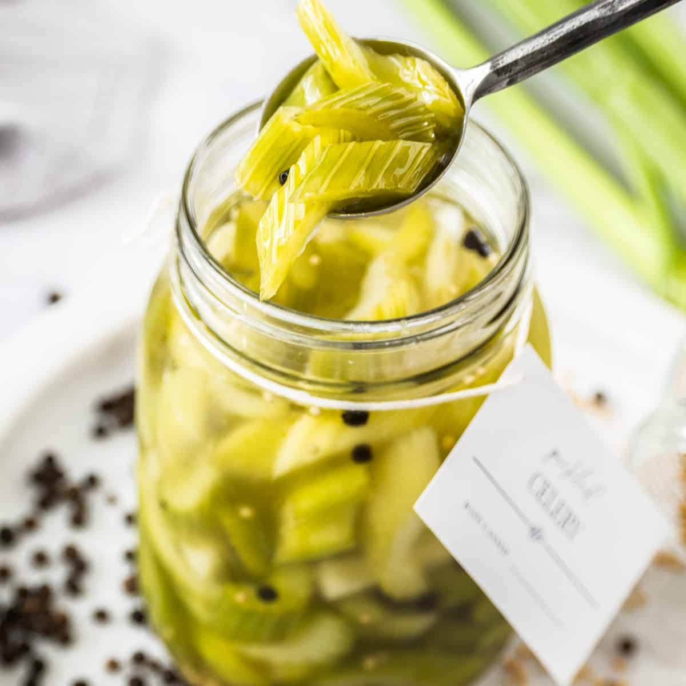

Pickled Celery

Description
Have you ever wondered why we are always served pickled with fried chicken? Nor have I. Let's find out. *googles*
A little bit of acidity helps brighten up the fried chicken, and that little bit of juicy flavor adds a sweetness that the sandwich needs.
says the google result.
That was a result for fried chicken sandwich but I believe that we can still appreciate some good acid pickles for fried chicken alone.
Here, I prepared a recipe for pickled celery inspired by Gordon Ramsay's Youtube video on cooking fried chicken.
Ingredients
Pickled Celery Ingredients
- Celery
- 2 each garlic cloves
Dried dill (1/4 tsp)
- Whole mustard seed (1/2 tsp)
- Black pepper corns (1/2 tsp)
- 2 each bay leaves
- Thinly sliced 1/4 yellow onions
Brine Ingredients
- Vinegar (1 cup)
- Water (1 cup)
- Sugar (2 tsp)
- Salt (1 tsp)
Steps
- Slice the celery in your preferences and add wash them.
- Add the celery, garlic, dill, mustard seed, yellow onion, and peppercorn into your jar.
- Mix the vinegar, water, sugar, and salt in a stainless steel pan and bring to a boil.
- When it starts boiling, pour it into the jar where you have the celery until everything is submerged.
- Put the lid on and put it in the refrigerator.
It should stay good for 2 weeks in the refrigerator!